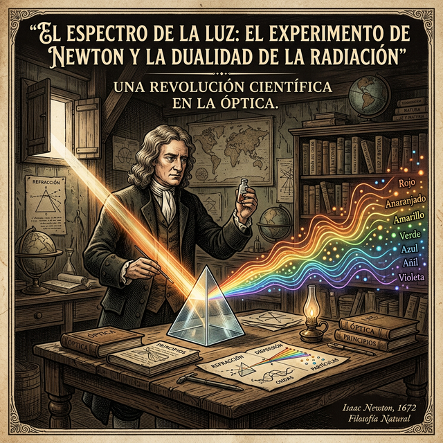

El mito del Experimento Crucial
El término experimentum crucis ("experimento de la cruz" o de la encrucijada) fue acuñado originalmente por Francis Bacon en el siglo XVII y popularizado por Robert Hooke e Isaac Newton. La idea epistemológica detrás de este concepto es tentadora y elegante: cuando existen dos teorías rivales que intentan explicar un mismo fenómeno, el científico debe diseñar un único experimento que arroje resultados mutuamente excluyentes.
Si la Teoría A predice que ocurrirá X, y la Teoría B predice que ocurrirá Y, el experimento actúa como un juez definitivo y brutal. Si el resultado es X, la Teoría B debe ser abandonada e incinerada inmediatamente. Sin embargo, como veremos a través de la historia de la luz, la filosofía de la ciencia nos demostró que los experimentos cruciales rara vez son definitivos. Ninguna gran teoría se rinde tras perder una batalla empírica, y la naturaleza suele ser mucho más extraña que nuestras dicotomías teóricas.
Partículas de Newton vs. Ondas de Huygens

La Era Mecanicista de la Óptica
A finales del siglo XVII, las dos mentes más brillantes de Europa chocaron sobre qué era exactamente la luz. Isaac Newton, amparado en su prestigio gravitacional, afirmaba que la luz era un torrente de pequeñísimas bolas materiales (corpúsculos) que viajaban en línea recta desde la fuente a nuestro ojo. Por otro lado, su contemporáneo holandés Christiaan Huygens argumentaba que la luz no era materia, sino que se comportaba como las ondas mecánicas en un estanque de agua, propagándose a través de un medio invisible llamado éter.
Dado el inmenso peso dogmático de Newton tras la publicación de los Principia Mathematica y su célebre tratado de Óptica (1704), la comunidad científica se inclinó religiosamente por la teoría corpuscular. Las "ondas" de Huygens quedaron relegadas a la oscuridad durante casi un siglo. Sin embargo, nadie había hecho el "experimento crucial" para decidir objetivamente.
El físico inglés Thomas Young diseñó lo que parecía ser el experimento crucial definitivo. Hizo pasar luz a través de dos rendijas extremadamente finas. Si la luz fuera corpúsculos balísticos, se esperarían dos franjas brillantes en la pared trasera. Pero el resultado fue un patrón de franjas alternadas claras y oscuras: un patrón de interferencia. Este comportamiento solo puede nacer si la luz es una onda, donde crestas y valles se cancelan mutuamente (oscuridad) o se suman (luz brillante). La teoría de Newton acababa de ser falsada experimentalmente.
Einstein y la catástrofe del Efecto Fotoeléctrico
Hacia fines del siglo XIX, la comunidad científica daba por cerrado el debate: la luz era indudablemente una onda electromagnética (confirmado por Maxwell). Sin embargo, existía un problema experimental molesto: el efecto fotoeléctrico. Cuando se ilumina una placa metálica con luz ultravioleta, el metal dispara electrones.
Bajo la teoría ondulatoria clásica, si uno aumentaba la intensidad de la luz, la "ola" debería arrancar electrones con más energía. Pero los experimentos medían otra cosa: no importaba qué tan brillante fuera la luz roja o amarilla, ningún electrón se movía. Pero con un tenue rayo de luz ultravioleta, los electrones salían disparados. La energía del electrón dependía únicamente de la frecuencia del color, no de la amplitud de la ola. La física clásica había entrado en crisis.
Albert Einstein (1879-1955)
Físico teórico de origen alemán, considerado el científico más importante del siglo XX. Aunque es mundialmente famoso por su Teoría de la Relatividad (que reformuló la gravedad y el espaciotiempo), fue su artículo de 1905 sobre el efecto fotoeléctrico el que le valió el Premio Nobel de Física. Al postular que la luz viaja en cuantos indivisibles de energía (fotones), Einstein devolvió a la luz su naturaleza corpuscular y abrió la puerta a la mecánica cuántica.
Un joven empleado de una oficina de patentes suiza llamado Albert Einstein publicó una audaz solución matemática. Para explicar este experimento crucial, Einstein propuso que la luz, al interactuar con la materia, no se comporta como una onda continua, sino como "paquetes discretos" indivisibles de energía cuántica, que luego se bautizarían como fotones. Era el retorno triunfal, en una nueva forma, del cadáver de la teoría corpuscular de Newton. Por esta explicación que fundó la era cuántica, y no por su Teoría de la Relatividad, Einstein ganó el Premio Nobel de 1921.
Louis de Broglie y el fin de las intuiciones
El debate epistemológico había llegado a un absurdo aparente: Thomas Young probó irrefutablemente que la luz es una onda, y Einstein probó irrefutablemente que la luz es un haz de partículas. Ambos "experimentos cruciales" tenían razón.
Louis de Broglie (1892-1987)
Físico aristócrata francés (ostentaba el título de Príncipe). Inicialmente estudió historia, pero la física teórica capturó su atención. En su revolucionaria tesis doctoral de 1924 propuso la "hipótesis de ondas de materia", dictaminando que cualquier partícula masiva en movimiento (como un electrón) tiene una onda asociada. Ganó el Premio Nobel en 1929, tras confirmarse experimentalmente su teoría. Su trabajo unificó las dualidades de la física abriendo el camino definitivo hacia la mecánica cuántica moderna.
El golpe de gracia al mundo clásico ocurrió en 1924, cuando el físico e historiador francés Louis de Broglie, en su tesis doctoral, empujó la simetría de la naturaleza hasta sus últimas consecuencias: si la luz (que creíamos onda) también es partícula, entonces las rocas fundamentales de la materia sólida (como los electrones, que creíamos indudablemente partículas físicas) también deben viajar comportándose como ondas inmateriales.
Años después, se dispararon electrones (materia elemental masiva) a través del experimento de doble rendija de Young, y se obtuvo asombrosamente un patrón de interferencia ondulatorio. Nació la mecánica cuántica moderna, destrozando la dicotomía de los entes clásicos. Filosóficamente, este caso destruyó para siempre la confianza ingenua en que un único "experimento crucial" (la doble rendija de Young) puede establecer lógicamente una única Verdad para todos los siglos, demostrando en su lugar que un mismo fenómeno subatómico contiene una dualidad incognoscible bajo nuestras categorías humanas, o como diría Bohr con su Principio de Complementariedad.
Impacto Tecnológico del Mundo Cuántico
Las complejas discusiones sobre fotones abstractos y corpúsculos inmateriales podrían parecer un mero pasatiempo filosófico, pero la revolución cuántica desencadenada por Einstein y De Broglie sentó las bases invisibles de la tecnología que sostiene el mundo moderno. Sin la comprensión práctica del efecto fotoeléctrico y la dualidad onda-partícula, nuestra vida cotidiana actual no existiría de la misma manera.
El hallazgo de Einstein de que los fotones pueden arrancar electrones de un material es el principio de funcionamiento de las celdas fotovoltaicas en los paneles solares (la energía del fotón de luz se convierte en un flujo de corriente). Además, todas las cámaras digitales modernas y sensores de celulares capturan la imagen bajo este mismo principio, midiendo el choque cuántico de los fotones contra sensores (chips CMOS) para registrar cada píxel digital informático.
Si los electrones se comportan como ondas con longitudes minúsculas —infinitamente más apretadas que las ondas de luz lumínica (según De Broglie)— podemos usarlos para "ver" objetos moleculares. Los microscopios electrónicos permiten resoluciones atómicas inconcebibles (vitales para el desarrollo de biología genética, vacunas o nanotecnología). Sin el dominio mecánico-cuántico a partir de estos hallazgos, no se habría desarrollado el transistor de silicio ni la era de las computadoras modernas.
Preguntas sobre la Racionalidad Científica
- Si un mismo experimento dictamina que algo es una onda y otro experimento que es una partícula, ¿la ciencia nos está dando una copia idéntica de la realidad en sí, o sólo nos da modelos útiles de la misma?
- ¿Por qué crees que a la comunidad científica (como vemos en CTS o paradigmas de Kuhn) le tomó casi 100 años aceptar las objeciones de Young, y otro largo tiempo asimilar los fotones de Einstein?
- Considerando a Lakatos y al "Cinturón Protector": ¿cómo se protegieron los defensores de Newton frente a las evidencias ondulatorias hasta que la crisis de los paradigmas los obligó al cambio?